SFDM: Robust Decomposition of Geometry and Reflectance for Realistic Face Rendering from Sparse-view Images
Daisheng Jin1, Jiangbei Hu1,2, Baixin Xu1, Yuxin Dai1, Chen Qian3, Ying He1✉
1 S-Lab, Nanyang Technological University
2 Dalian University of Tehcnology
3 SenseTime Research
✉ Corresponding author
CVPR 2025
Abstract

In this study, we introduce a novel two-stage technique for decomposing and reconstructing facial features from sparse-view images, a task made challenging by the unique geometry and complex skin reflectance of each individual. To synthesize 3D facial models more realistically, we endeavor to decouple key facial attributes from the RGB color, including geometry, diffuse reflectance, and specular reflectance. Specifically, we design a Sparse-view Face Decomposition Model (SFDM): 1) In the first stage, we create a general facial template from a wide array of individual faces, encapsulating essential geometric and reflectance characteristics. 2) Guided by this template, we refine a specific facial model for each individual in the second stage, considering the interaction between geometry and reflectance, as well as the effects of subsurface scattering on the skin. With these advances, our method can reconstruct high-quality facial representations from as few as three images. The comprehensive evaluation and comparison reveal that our approach outperforms existing methods by effectively disentangling geometric and reflectance components, significantly enhancing the quality of synthesized novel views, and paving the way for applications in facial relighting and reflectance editing.
Sparse-view Face Decomposition Model
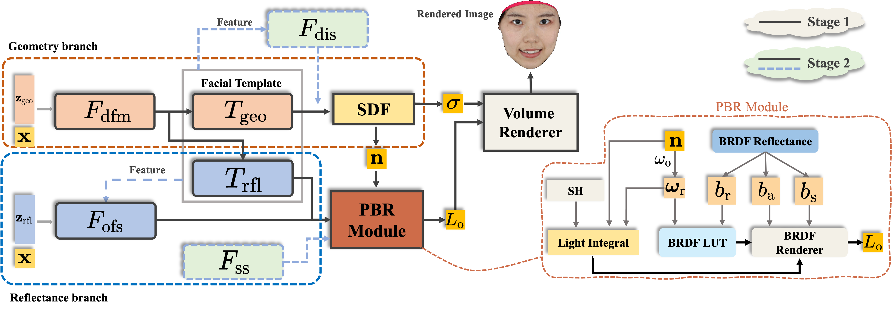Our method learns a generalized facial template with distinct key attributes from multiple individuals, enabling photorealistic novel-view synthesis as well as various other applications. The framework consists of two major branches: the upper branch focuses on geometry reconstruction, while the lower branch is for reflectance estimation.
In Stage 1, we train a general facial template using multiple subjects, where all individuals are reconstructed through a shared template module that integrates both facial geometry and reflectance. For identity-dependent geometry, a deformation module maps corresponding points from the observation space to the template space. For identity-dependent reflectance, an offset module captures the deviation between a specific individual and the generalized facial template. By applying the learned deformation and reflectance offsets to the template, we obtain the final facial geometry and reflectance information for each individual. A physically based rendering module is then employed to simulate lighting conditions and the rendering process, reconstructing high-fidelity facial images. Throughout training, the template module progressively accumulates prior knowledge of human facial attributes, enhancing its generalization ability.
In Stage 2, we initialize SFDM with the pretrained facial template to refine facial details of specific subjects. Building upon the template, we introduce a displacement module to reconstruct fine-scale details and out-of-domain geometric variations. For facial reflectance, an offset module is utilized to capture intricate reflectance properties unique to each individual. Furthermore, to enhance reconstruction fidelity, we propose two complementary strategies that leverage the inherent characteristics of our facial template. By integrating prior knowledge of both facial geometry and reflectance, we facilitate more accurate inference across both branches. Additionally, recognizing the limitations of BRDF in approximating skin reflectance, we introduce a subsurface scattering module to simulate light transport within the skin, achieving more realistic rendering results.
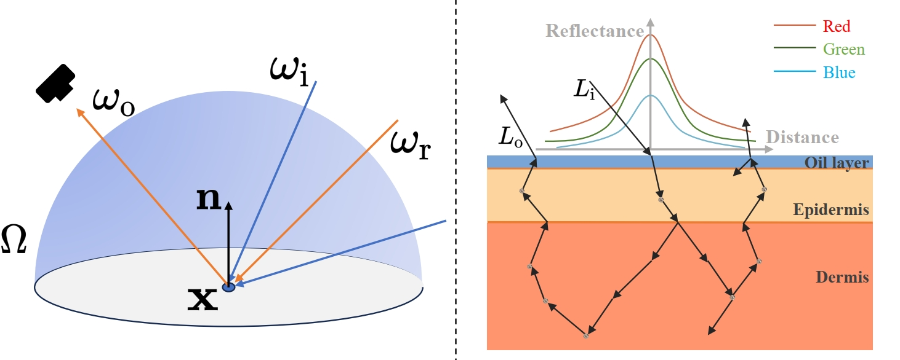Results
Here, we present some results of subjects from the publicly available list of Facescape. Leveraging SFDM's strong prior facial knowledge and high flexibility due to its deformability, we can reconstruct a diverse range of faces from sparse-view images.
Different subjects
 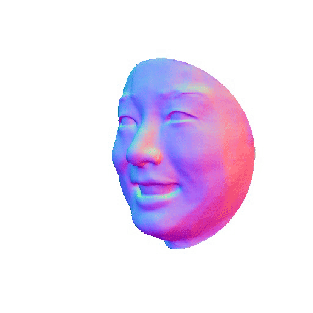
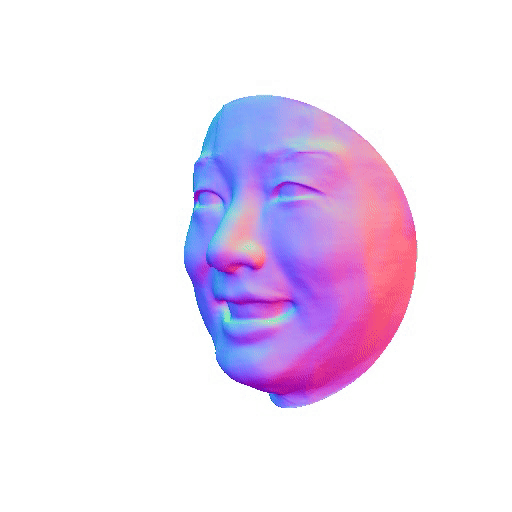
 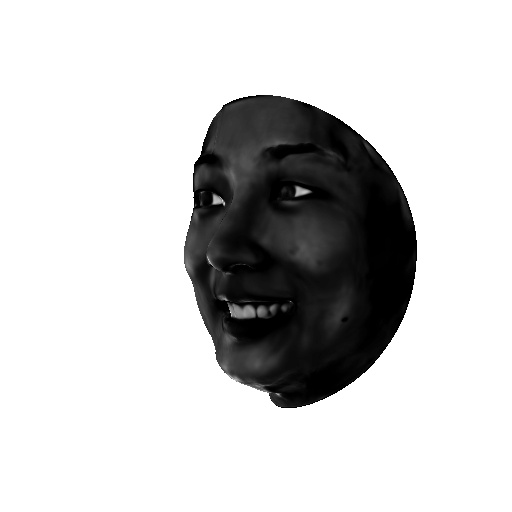
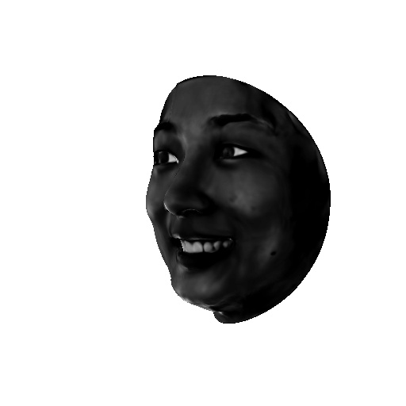
 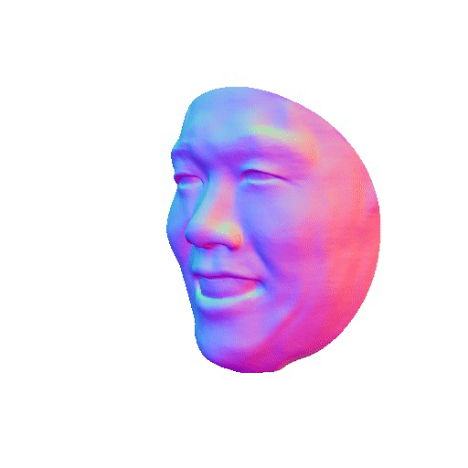
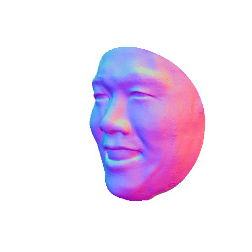
 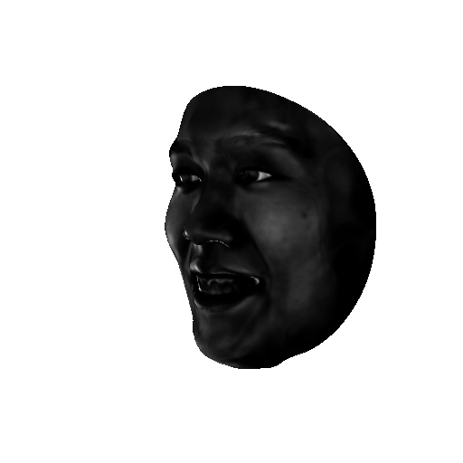
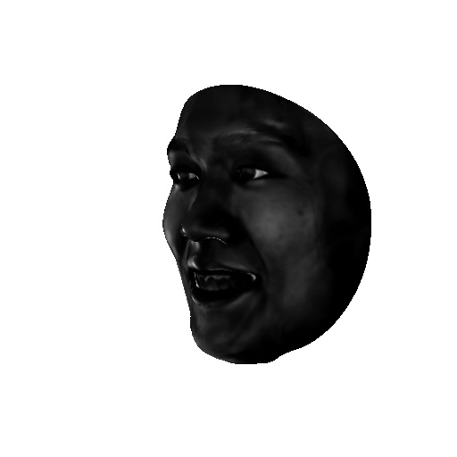
 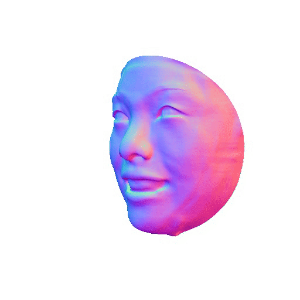
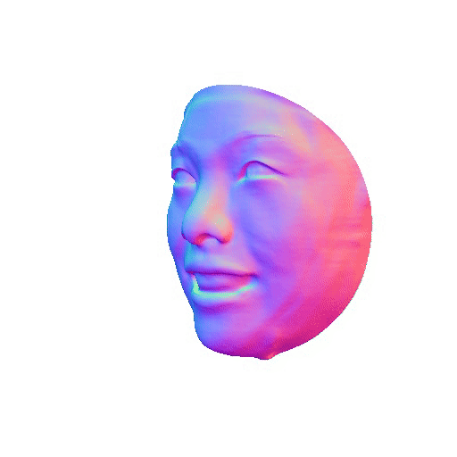
 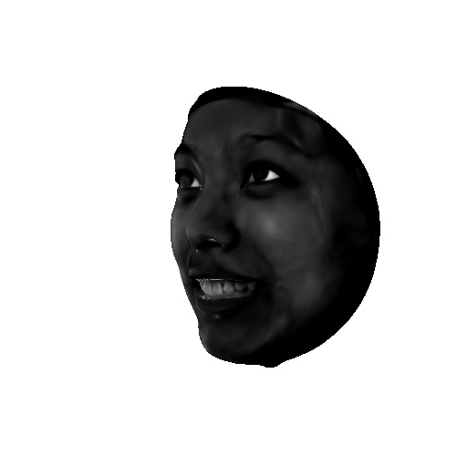
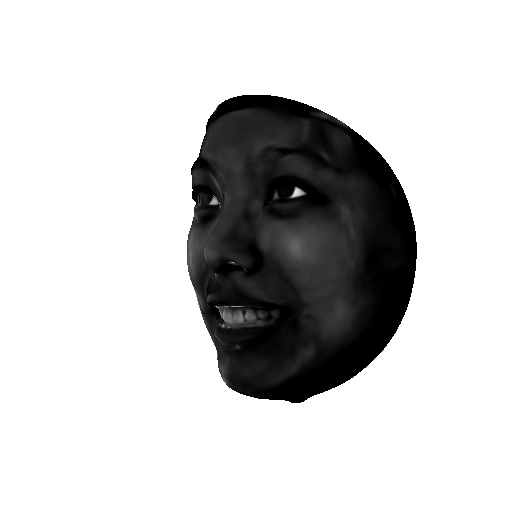
Render
Normal
Diffuse
Specular
Different expressions


 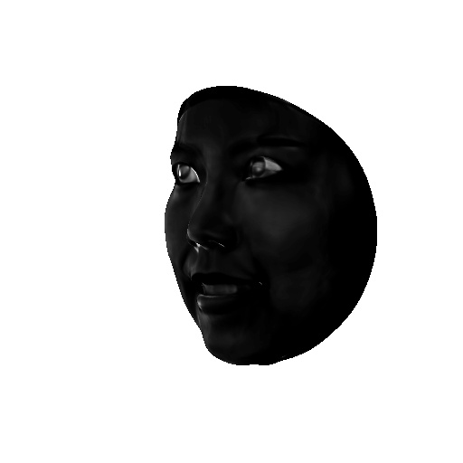
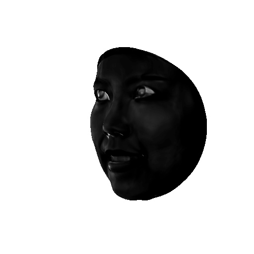
 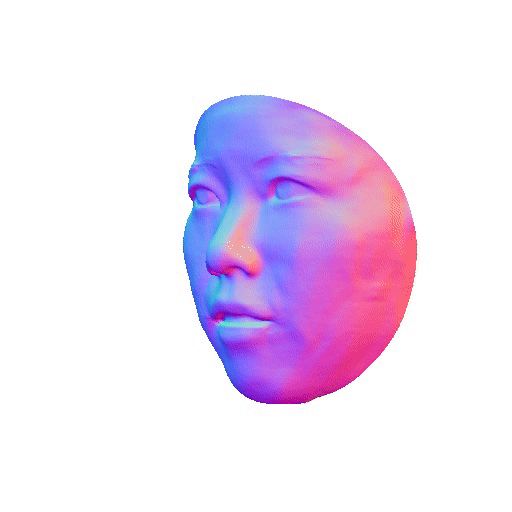
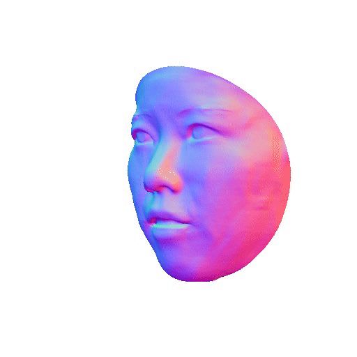
 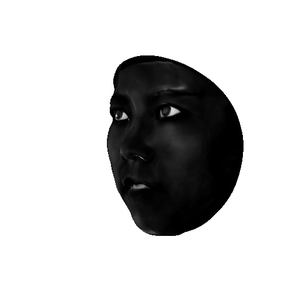
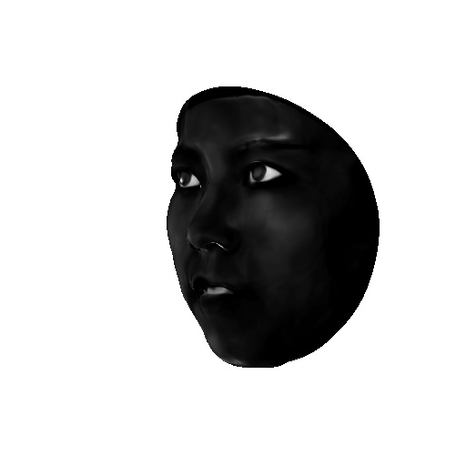


Render
Normal
Diffuse
Specular
Citation
@article{jin2023robust,
title={Robust Geometry and Reflectance Disentanglement for 3D Face Reconstruction from Sparse-view Images},
author={Jin, Daisheng and Hu, Jiangbei and Xu, Baixin and Dai, Yuxin and Qian, Chen and He, Ying},
journal={arXiv preprint arXiv:2312.06085},
year={2023}
}
Acknowledgement
This work was supported in part by the Ministry of Education, Singapore, under its Academic Research Fund Grants (MOE-T2EP20220-0005 & RT19/22) and the RIE2020 Industry Alignment Fund–Industry Collaboration Projects (IAF-ICP) Funding Initiative, as well as cash and in-kind contribution from the industry partner(s).